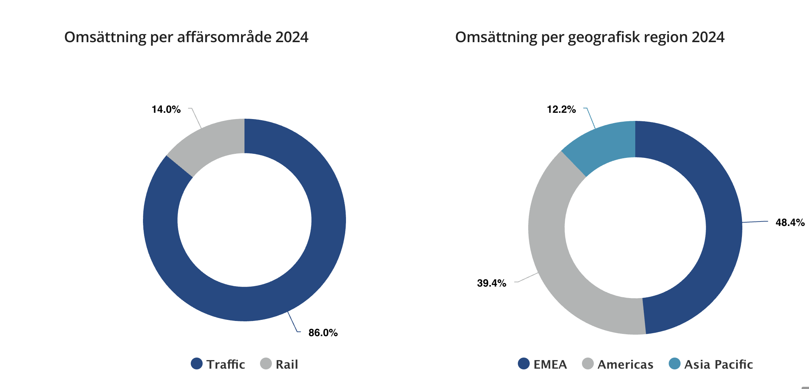
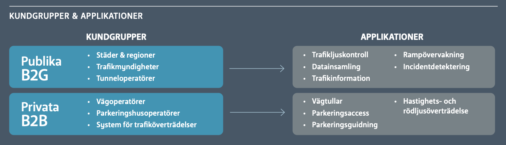
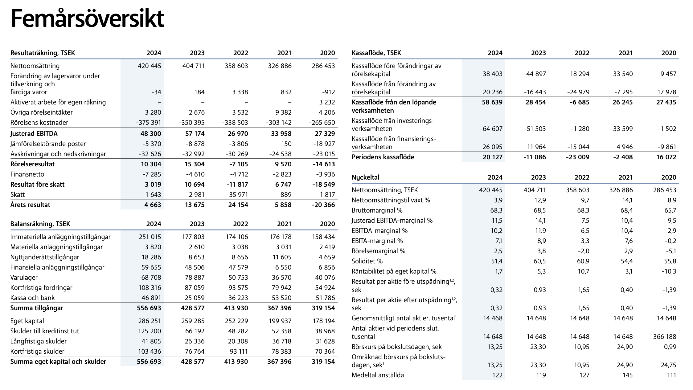
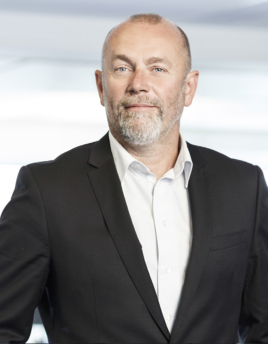
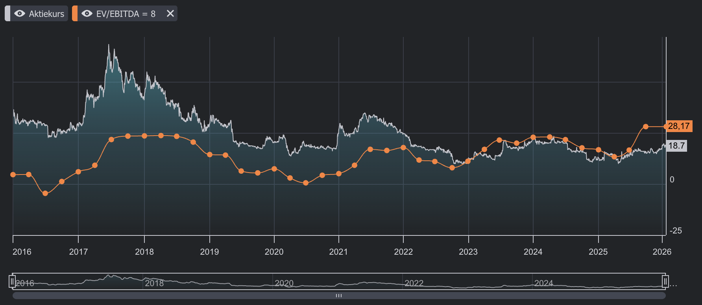

Aktiecase TagMaster

Tänk på att investeringar alltid innebär ett risktagande. Gör alltid din egen analys innan eventuell handel.
Jag äger aktier i TagMaster.
Sammanfattning
TagMaster är ett litet teknikbolag med ett börsvärde på cirka 300 MSEK och en omsättning på ungefär en halv miljard kronor. Bolaget har uppvisat en genomsnittlig omsättningstillväxt på 13 procent per år och vinsttillväxt på 19 procent per år i snitt de senaste 7 åren, huvudsakligen genom förvärv. Med en FCF-yield på 10 procent och en nettoskuld/EBITDA på 0,9x framstår bolaget som finansiellt stabilt.
Kundbasen består till 60 procent av statliga aktörer världen över och 40 procent av företagskunder. Verksamheten är starkt projektbaserad, vilket skapar slagighet i omsättningen – enskilda kvartal kan visa organiska omsättningstapp på 20 procent. På årsbasis, med förvärv inkluderade, är dock tillväxten stabil.
Aktien handlas för närvarande till 5,6x EV/EBITDA, en betydande rabatt jämfört med före pandemin då bolaget handlades till cirka 15x. Mitt estimat för fair value ligger på 9–10x EV/EBITA, vilket motsvarar en aktiekurs på 26–31 SEK – en uppsida på cirka 40–65 procent från dagens nivå på 18,7 SEK.
Bakgrund
TagMaster grundades 1994 som en spin-off från Philips/Saab Combitech och har sedan dess utvecklats till en ledande aktör inom avancerade sensorsystem för trafikmonitorering. Bolaget är noterat på Nasdaq First North och redovisar enligt K3-regelverket.
Med över 10 000 installationer världen över har TagMaster byggt upp en stark position inom både trafiklösningar och spårbundna system. Koncernen har cirka 150 anställda och har genomfört totalt 9 förvärv sedan 2015.
Vision
Vi ska vara den mest innovativa leverantören av ITS-lösningar till Smarta Städer.
Mission
Vi ska leverera pålitliga och lättanvända detekterings- och identifieringslösningar för krävande miljöer med användbar och korrekt information.
Affärsmodell
TagMaster utvecklar och levererar datalösningar för smarta städer baserat på avancerad sensorteknologi. Genom att kombinera olika teknologier – RFID, radar, magnetiska sensorer och kameror – erbjuder bolaget integrerade lösningar som förbättrar effektivitet, säkerhet och miljöpåverkan inom transport- och trafikflöden.
Affärsmodellen bygger på att erbjuda “one-stop-shop solutions” där teknologi och mjukvara kombineras. TagMaster tar ett långsiktigt ansvar för levererade produkter, vilket skapar stabilitet för kunderna och återkommande affärer – över 80 procent av kunderna är återkommande.
Säljkanaler:
- Indirekt försäljning: 80–85 procent
- Direkt försäljning: 15–20 procent

Produkter och tjänster
TagMaster verkar inom två huvudsakliga segment och fördelningen ser ut som följande.

Traffic Solutions
Inom trafiksegmentet erbjuder TagMaster ett brett utbud av lösningar:
- Vägtullar – System för automatisk avgiftshantering. Illinois Tollway och Hong Kongs tunnlar använder TagMasters teknik.
- Parkeringstjänster – Quercus Technologies erbjuder automatisk parkering genom registreringsskyltavläsning med betalning via app eller automatisk fakturering.
- Access management – Lösningar för gated communities och bevakade områden.
- Automatisk incidentidentifiering – System för att minska risken för seriekrockar genom tidig varning.
- Trafikstatistik och trafikledning – Inklusive trafikljus och signalsystem.
Teknikplattformen inkluderar RFID, magnetsensorer, radar, kameror och molnintegrering.
Rail Solutions
TagMaster är en ledande aktör inom sensorsystem för spårbunden trafik. Sensorerna genererar hundratusentals datapunkter varje minut och möjliggör säker och punktlig trafik. Egenutvecklade algoritmer för positionsbestämning, axelräkning och dörröppning har skapat en stark position inom signalsystem för tunnelbana och spårvagn.
Kunder inom Rail Solutions:
- Globala signalsystemtillverkare som Alstom, Hitachi, Stadler och Siemens Mobility
- Regionala och lokala integratörer för spårvagnsprojekt

Finansiella mål och utfall
LÅNGSIKTIGA FINANSIELLA MÅL
- Tillväxt >20% (organisk och förvärvad)
- Justerad EBITDA >12%
- Kassaflöde/Justerad EBITDA >85% över en treårsperiod
UTFALL 2024
- 4% total tillväxt
- Justerad EBITDA 11,5%
- Kassaflöde/Justerad EBITDA 60%
TagMaster har ambitiösa långsiktiga mål men har under 2024 inte nått upp till samtliga. Den organiska tillväxten har varit utmanande, även om lönsamheten ligger nära målnivån. Den projektbaserade affärsmodellen skapar volatilitet mellan kvartalen, vilket gör det svårt att konsekvent nå tillväxtmålen.

Marknaden
TagMaster verkar på en fragmenterad marknad med många mindre aktörer som fokuserar på olika delar av värdekedjan. Bolaget uppskattar den totala adresserbara marknaden till cirka 1,2 miljarder USD, vilket innebär att TagMaster är en mycket liten spelare i ett stort sammanhang.
Marknadskaraktäristik:
- Fragmenterad med många nischade aktörer
- Långa beslutscykler, särskilt för statliga projekt
- Ökande efterfrågan på smarta stadslösningar och trafikmonitorering
- Trend mot outsourcad teknikutveckling, liknande bilindustrin
Unit economics
Intäkterna är nästan uteslutande projektbaserade – uppskattningsvis 95 procent av betalningarna sker vid specifika tidpunkter snarare än löpande. Detta skapar slagighet men innebär också att varje ny order har direkt resultatpåverkan.
Bruttomarginalen är hög, vilket är typiskt för teknikbolag med betydande mjukvarukomponent. Verksamheten präglas av långa försäljningscykler och komplexa affärer som kräver omfattande kunskapsutbyte med kunden.
Konkurrens
Marknaden för ITS-lösningar är fragmenterad utan någon dominerande aktör. TagMaster konkurrerar med både globala teknikjättar inom specifika segment och lokala specialister. Bolagets styrka ligger i bred teknologikompetens och förmågan att erbjuda integrerade lösningar.
SWOT-analys
Styrkor
- Bred teknologiportfölj – RFID, radar, kamera och magnetiska sensorer
- Höga bruttomarginaler och goda kassaflöden
- Återkommande kunder – över 80 procent
- Europabaserad produktion – minskad geopolitisk risk
- Stark position inom Rail Solutions med prestigefyllda kunder
Svagheter
- Hög projektslagighet – kvartal kan variera kraftigt
- Låg organisk tillväxt – tillväxten är förvärvsberoende
- Illikvid aktie – spreader på 5–10 procent mellan köp och sälj
- Liten storlek – begränsade resurser för större projekt
Möjligheter
- Smarta städer – växande global trend
- Ökad efterfrågan på trafikmonitorering med autonoma fordon och robotar
- Konsolidering – möjlighet att förvärva konkurrenter
- Geografisk expansion till nya marknader
Risker
- Förvärvsrisk – kritiskt att förvärven genererar långsiktigt värde
- Integrationsrisk – kräver skicklighet att integrera förvärvade bolag
- Omsättningsslagighet – enskilda kvartal kan tappa 20 procent organiskt
- Valutarisk – internationell verksamhet exponerar för valutafluktuationer
- Outsourcad produktion – beroende av kontraktstillverkare
Ledning och styrelse
Ledning
Jonas Svensson – VD och koncernchef
- Född 1962
- Anställd sedan 2012
- Aktieinnehav: 220 012 aktier (cirka 1,5 procent!)
- Utbildning: Civilekonom, Lunds universitet
- Tidigare: Kinetico Inc., Smarteq Wireless, American Express, SEB, Siemens
- Årlig ersättning: cirka 3,1 MSEK
Margaretha Narström – CFO
- Född 1967
- Anställd sedan 2016
- Aktieinnehav: 20 736 aktier
- Utbildning: Civilekonom, Karlstads universitet
- Tidigare: Deloitte, JM, Skatteverket
Styrelse
Bernt Ingman – Styrelseordförande sedan 2021
- Född 1954
- Aktieinnehav: 16 000 aktier
- Omfattande styrelseerfarenhet från Husqvarna, Munters, Gunnebo, Doro
- Övriga uppdrag: Ordförande Pricer AB, ledamot Embracer Group AB
Gert Sviberg – Ledamot sedan 2012

- Född 1967
- Aktieinnehav: 2 000 000 aktier (14,5 procent)
- Utbildning: Sjöingenjör
- Övriga uppdrag: Viking Line
Aktien
TagMaster är noterat på Nasdaq First North med ett börsvärde på knappt 300 MSEK. Aktien är illikvid med spreader på 5–10 procent mellan köp- och säljkurs, vilket skapar både risk och möjlighet för långsiktiga investerare.
Ägarstruktur (Ej fullständing, bara de mest signifikanta):
| Ägare | Andel |
|---|---|
| Anders Bladh | ~17% |
| Gert Sviberg | 14,5% |
| VD Jonas Svensson | 1,5% |
| John Skogman (Börsens Finest) | 0,4% |
Bolaget amorterar betydande belopp årligen (cirka 32 MSEK) för att betala ned förvärvsskulder. En potentiell trigger är när bolaget börjar dela ut pengar till aktieägarna. Princip obefintligt ägande av fonder.
John Skogman äger en liten den av Tagmaster och dess prospekt är skrivet tillsammans med finansbolaget Remium där Skogman under en tid jobbade.
Värdering
Före pandemin handlades TagMaster till cirka 15x EV/EBITDA. I dagsläget har multipeln komprimerats till 5,6x, trots att bolaget har fortsatt växa. Investerare ser ut att ha blivit brända av volatila kvartalsrapporter med negativ organisk tillväxt, men det är min egen tolkning av varför TagMaster är baissat.

Värderingsansats
Med antaganden om 8 procent tillväxt och 8,8 procent EBITA-marginal för 2026E handlas bolaget till cirka 6,5x EV/EBITA. En rabatt mot “normala” industribolag är befogad på grund av storlek och slagighet, men nuvarande värdering framstår som för låg.
| Multipel | Värdering | Aktiekurs |
|---|---|---|
| 9x EV/EBITA | Fair value | ~26 SEK |
| 10x EV/EBITA | Fair value | ~31 SEK |
| Nuvarande | 5,6x | 18,7 SEK |
Uppsida: 40–65 procent till fair value.
Diskussion
TagMaster är ett intressant case för den tålmodige investeraren. Bolaget har en bevisad förmåga att växa genom förvärv, genererar goda kassaflöden och har en stark position i fragmenterade nischmarknader.
Den stora utmaningen är projektbaserad slagighet som skrämmer bort många investerare. Över tid, när bolaget växer och får fler parallella projekt, bör denna volatilitet minska. Verksamheten inom smarta städer och trafikmonitorering har strukturella medvindar – behovet av att övervaka autonoma system och optimera trafikflöden kommer bara att öka.
Produktionen har flyttats från Kina och Mexiko till Europa, vilket minskar geopolitisk risk. VD har varit på plats i över 10 år och äger en meningsfull andel, vilket skapar förtroende för kontinuitet.
Jämförelsekvartalen framöver är relativt enkla. Om bolaget kan undvika stora organiska tapp (mer än 15 procent) ser förutsättningarna goda ut för positiva överraskningar.
Slutsats
TagMaster är ett undervärderat teknikbolag i en strukturellt växande nisch. Aktien handlas till en betydande rabatt mot historiska nivåer och mot vad en stabil tillväxt och goda kassaflöden motiverar.
Bull case: Fortsatt stabil tillväxt genom förvärv, minskad slagighet över tid, och en omvärdering mot 9–10x EV/EBITA ger 40–65 procent uppsida.
Bear case: Fortsatta volatila kvartal, misslyckade förvärv och svårigheter att nå organisk tillväxt kan hålla aktien nedtryckt.
För investerare med tålamod och acceptans för illikviditet framstår TagMaster som ett attraktivt case med god risk/reward.
Disclaimer: Jag äger aktier i TagMaster. Gör din egan analys innan eventuell handel.